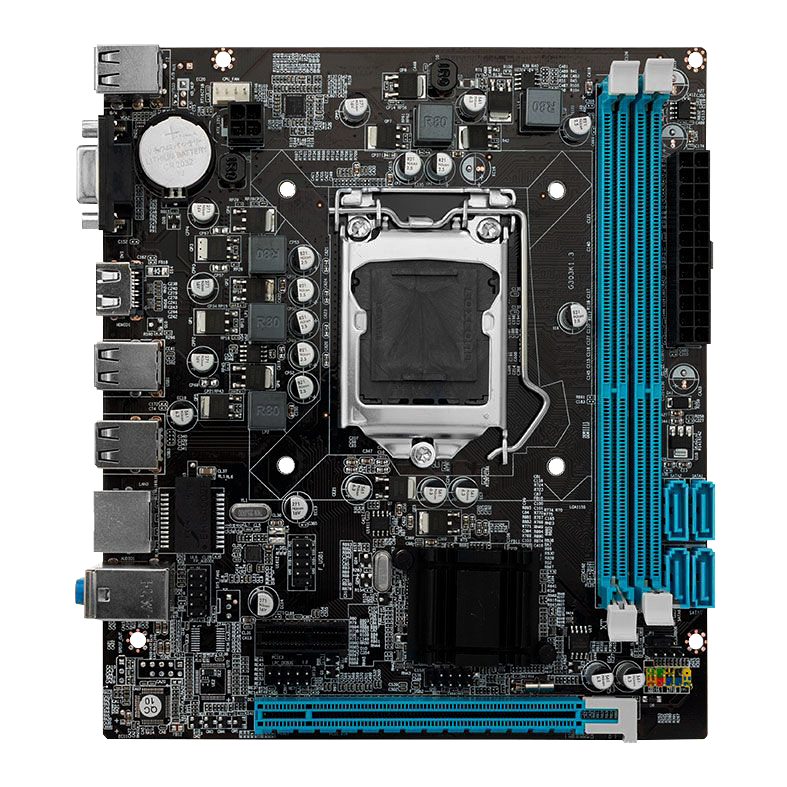
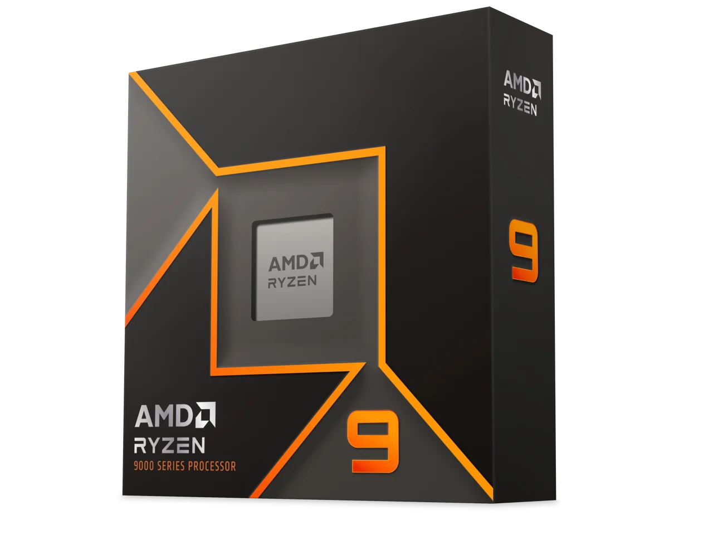
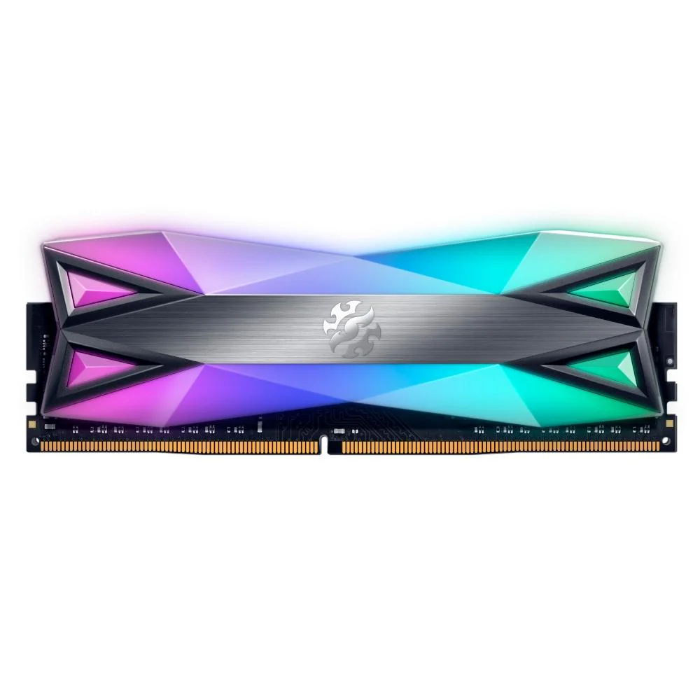
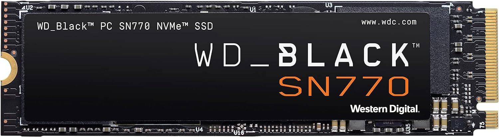
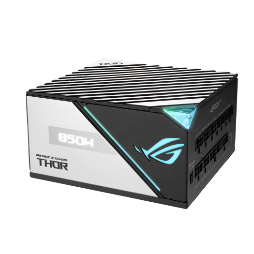

Placa-mãe (Motherboard)
A placa-mãe é o principal componente que conecta todos os outros elementos do computador. Ela hospeda o processador, a memória RAM, as placas de expansão, e fornece conexões para unidades de armazenamento e periféricos. Sua função é garantir a comunicação eficiente entre os diferentes componentes do sistema.

Processador (CPU)
O processador, ou CPU (Central Processing Unit), é o cérebro do computador. Ele executa instruções de programas, processa dados e realiza cálculos necessários para a operação dos aplicativos. A performance de um processador é medida em gigahertz (GHz) e o número de núcleos que possui, que pode impactar diretamente na velocidade e eficiência do sistema.

Memória RAM (Random Access Memory)
Linux é um sistema operacional de código aberto que oferece uma ampla gama de distribuições, como Ubuntu, Fedora e Debian. É conhecido por sua flexibilidade, segurança e robustez. Linux é amplamente utilizado em servidores, supercomputadores e dispositivos embarcados, além de ser uma opção popular para usuários avançados e desenvolvedores. A sua natureza open source permite que os usuários personalizem o sistema conforme suas necessidades.

Placa de Vídeo (GPU)
A placa de vídeo, ou GPU (Graphics Processing Unit), é responsável pelo processamento de imagens e vídeos. Ela é crucial para jogos, edição de vídeo e outras tarefas que exigem processamento gráfico intensivo. Placas de vídeo modernas também são usadas em computação paralela para acelerar tarefas de processamento de dados.

Unidade de Armazenamento (HD/SSD)
O iOS é o sistema operacional desenvolvido pela Apple para seus dispositivos móveis, incluindo iPhones e iPads. Oferece uma experiência de usuário fluida e segura, com uma interface intuitiva e um ecossistema de aplicativos controlado pela App Store. O iOS é conhecido por sua integração com outros produtos Apple e por suas atualizações regulares que trazem novos recursos e melhorias de segurança.

Fonte de Alimentação (PSU)
A fonte de alimentação fornece a energia necessária para o funcionamento dos componentes do computador. Ela converte a corrente alternada (AC) da rede elétrica em corrente contínua (DC), que é usada pelos componentes internos. Uma fonte de qualidade é crucial para garantir a estabilidade e a segurança do sistema, prevenindo problemas causados por falhas de energia.